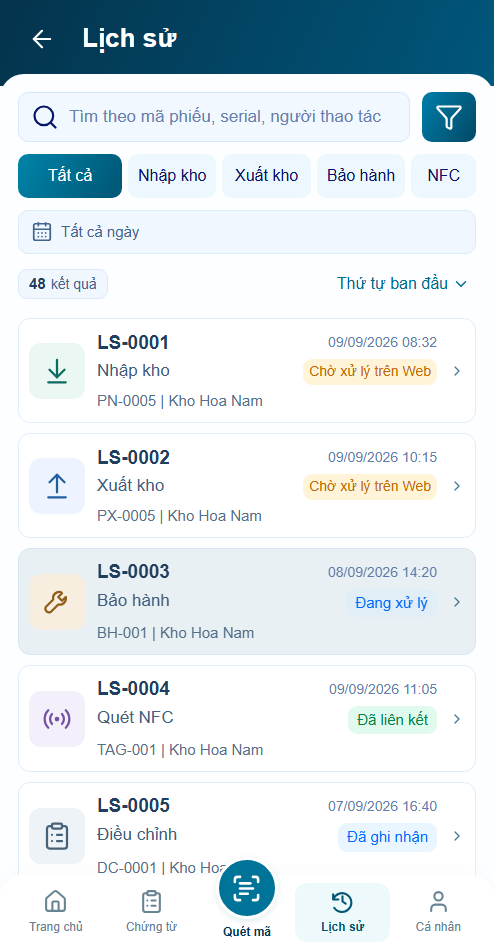

Motion P08 Lịch sử
Lọc danh sách140ms; chuyển chi tiết dùng fade của AppShell. Số liệu và sự kiện cũ hiện ngay, không count-up hoặc phát lại khi Back. Reduced/off giữ cùng dữ liệu và luồng thao tác.
Mở app để kiểm tra chuyển động · Báo cáo kiểm chứng
Công cụ ngoài app có mục Motion P02 / AppShell để chọn auto/reduced/off. Ảnh dưới là trạng thái sau settle, không thay thế trace chuyển động.
Danh sách trước và sau
Trước Sau, giữ geometry
Sau, giữ geometry
Chi tiết và hoạt động theo ngày
Trace thực tế
Auto · OS reduced · Off · Kết quả kiểm tra
Hình thức chuyển động chờ bạn review; không có tuyên bố60fps từ ảnh hoặc cảm giác nhìn.